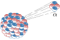

alpha-particle

Definition: Alpha particles, also called alpha rays or alpha radiation, consist of two protons and two neutrons bound together into a particle identical to a helium-4 nucleus. They are generally produced in the process of alpha decay, but may also be produced in other ways. Alpha particles are named after the first letter in the Greek alphabet, α. The symbol for the alpha particle is α or α2+. Because they are identical to helium nuclei, they are also sometimes written as He2+ or 42He2+ indicating a helium ion with a +2 charge (missing its two electrons). Once the ion gains electrons from its environment, the alpha particle becomes a normal (electrically neutral) helium atom 42He.
Source: Wikipedia
Wikipedia Page (Something wrong with this association? Let us know.)
Wikidata Page (Something wrong with this association? Let us know.)